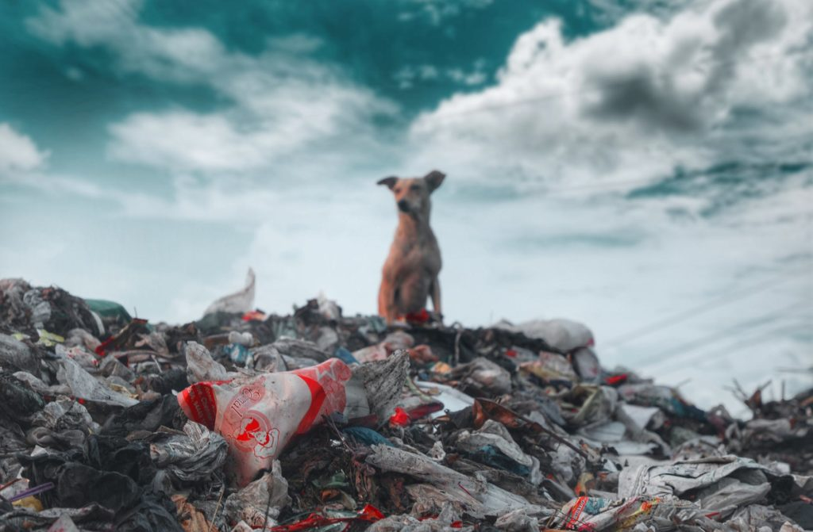
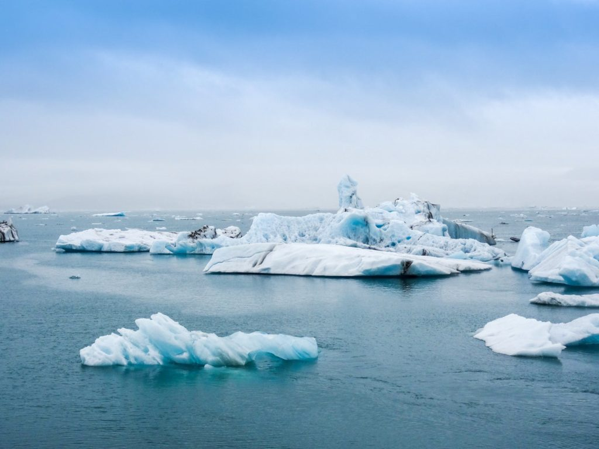
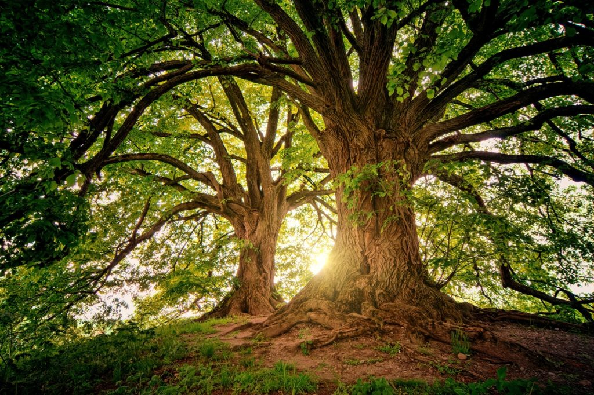
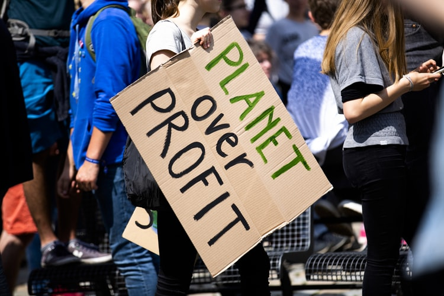

Pollution a term which even kids are aware of these days. It has become so common that
almost everyone acknowledges the fact that pollution is rising continuously. The term ‘pollution’ means the
manifestation of any unsolicited foreign substance in something. When we talk about pollution on earth, we
refer to the contamination that is happening of the natural resources by various pollutants. All this is
mainly caused by human activities which harm the environment in ways more than one. Therefore, an urgent
need has arisen to tackle this issue straightaway. That is to say, pollution is damaging our earth severely
and we need to realize its effects and prevent this damage. In this essay on pollution, we
will see what are the effects of pollution and how to reduce it.

Pollution affects
the quality of life more than one can imagine. It works in mysterious ways, sometimes which cannot be seen
by the naked eye. However, it is very much present in the environment. For instance, you might not be able
to see the natural gases present in the air, but they are still there. Similarly, the pollutants which are
messing up the air and increasing the levels of carbon dioxide is very dangerous for humans. Increased level
of carbon dioxide will lead to global warming.
Further, the water is polluted in the name of industrial development, religious practices and more will
cause a shortage of drinking water. Without water, human life is not possible. Moreover, the way waste is
dumped on the land eventually ends up in the soil and turns toxic. If land pollution keeps on happening at
this rate, we won’t have fertile soil to grow our crops on. Therefore, serious measures must be taken to
reduce pollution to the core.
Get English Important Questions here
Types of Pollution
Air Pollution
Water Pollution
Soil Pollution
How to Reduce Pollution?
After learning the harmful effects of pollution, one must get on the task of preventing or reducing
pollution as soon as possible. To reduce air pollution, people should take public transport or carpool to
reduce vehicular smoke. While it may be hard, avoiding firecrackers at festivals and celebrations can also
cut down on air and noise pollution. Above all, we must adopt the habit of recycling. All the used plastic
ends up in the oceans and land, which pollutes them.
So, remember to not dispose of them off after use, rather reuse them as long as you can. We must also
encourage everyone to plant more trees which will absorb the harmful gases and make the air cleaner. When
talking on a bigger level, the government must limit the usage of fertilizers to maintain the soil’s
fertility. In addition, industries must be banned from dumping their waste into oceans and rivers, causing
water pollution.
To sum it up, all types of pollution is hazardous and comes with grave consequences. Everyone must take a
step towards change ranging from individuals to the industries. As tackling this problem calls for a joint
effort, so we must join hands now. Moreover, the innocent lives of animals are being lost because of such
human activities. So, all of us must take a stand and become a voice for the unheard in order to make this
earth pollution-free.
Global warming
Global Warming is a term almost everyone is familiar with. But, its meaning is still not
clear to most of us. So, Global warming refers to the gradual rise in the overall temperature of the
atmosphere of the Earth. There are various activities taking place which have been increasing the
temperature gradually. Global warming is melting our ice glaciers rapidly. This is extremely harmful to the
earth as well as humans. It is quite challenging to control global warming; however, it is not unmanageable.
The first step in solving any problem is identifying the cause of the problem. Therefore, we need to first
understand the causes of global warming that will help us proceed further in solving it. In this essay on
Global Warming, we will see the causes and solutions of Global Warming.

Causes of Global Warming
Global warming has become a grave problem which needs undivided attention. It is not happening because of a
single cause but several causes. These causes are both natural as well as manmade. The natural causes
include the release of greenhouses gases which are not able to escape from earth, causing the temperature to
increase.
Get English Important Questions here
Further, volcanic eruptions are also responsible for global warming. That is to say, these eruptions release
tons of carbon dioxide which contributes to global warming. Similarly, methane is also one big issue
responsible for global warming.
Global Warming Solutions
As stated earlier, it might be challenging but it is not entirely impossible. Global warming can be stopped
when combined efforts are put in. For that, individuals and governments, both have to take steps towards
achieving it. We must begin with the reduction of greenhouse gas.
Furthermore, they need to monitor the consumption of gasoline. Switch to a hybrid car and reduce the release
of carbon dioxide. Moreover, citizens can choose public transport or carpool together. Subsequently,
recycling must also be encouraged.
Read Global Warming Speech here
For instance, when you go shopping, carry your own cloth bag. Another step you can take is to limit the use
of electricity which will prevent the release of carbon dioxide. On the government’s part, they must
regulate industrial waste and ban them from emitting harmful gases in the air. Deforestation must be stopped
immediately and planting of trees must be encouraged.
In short, all of us must realize the fact that our earth is not well. It needs to treatment and we can help
it heal. The present generation must take up the responsibility of stopping global warming in order to
prevent the suffering of future generations. Therefore, every little step, no matter how small carries a lot
of weight and is quite significant in stopping global warming.
Save Trees
Save Trees Essay on Save Trees: From childhood, we have heard that trees are our best
friend but in practical life, we didn’t see anyone who treats trees as their friends. Although they are the
most valuable life source on the earth. They benefit every life form in a direct or indirect way. And the
earth is connected to them to maintain a natural balance. In this essay on save trees, we are discussing the
reason why our friends need saving.
They nourish us and protect us in many ways. Also, they keep our environment green and clean. So, it becomes
our responsibility to repay them for the things they do for us by saving them. Besides, large trees are more
beneficial than small ones because they capture more carbon, capture more water, combat the heat, filter
greenhouse gases, gives shelter from heat and sunlight, etc. So, it can be said that we depend on them more
rather than they on us.

Advantages and Importance of Trees
As we have discussed the benefits of trees in short but here we are going to discuss them in detail. Plants
and Trees fight the climatic changes that are destroying the earth. They also filter the air that we breathe
and absorb all the harmful chemical gases and odors from the environment. Also, they take in the harmful
carbon dioxide and gives out oxygen.
They are good for the diversity of flora and fauna. They give us food, shelter and many more things that we
can’t count. Besides, they never demand anything from us and also prevent soil erosion, water evaporation.
Above all, they control and manage the effects of wind, sun and, rain.
How to Save Trees?
The human has become aware and serious about this issue and started doing the best they can do to save trees.
The forest departments and government have banned the illegal cutting of trees. And they are going digital so
that they can save paper which will reduce the number of trees cut down for making paper.
Apart from that, the forest area after cutting of trees should be replanted with new ones. Also, we should teach
our children to plant trees and ask them to pass it on their friends and acquaintances.
The least that we can do is to plant some pots in our home rooftops or garden and ask our neighbor to do the
same. Also, if we see the removal of a tree then we should inform the local authority about it to create
awareness. Above all, strict laws should be made for people who illegally or without permission cut these trees
for their own benefits.
The various life form is able to survive on earth due to plants. If we remove plants from the earth even for one
day then the survival of man will become difficult.
Besides, they are the source of water and fresh oxygen on earth. Cutting trees means destroying life on earth.
So, the time has come that we to be responsible for the action we have done till now. And start finding ways to
save this Green Gold.
Save Earth
Save Earth Earth and the resources of earth make life possible on it. If we were to imagine
our lives without these resources, that would not be possible. As life cannot function without sunshine,
air, vegetation, and water. However, this is soon going to be our reality if we do not save the earth now.

The resources earth provides us with are limited.
They are blessings which we do not count. Human has become selfish and is utilizing the earth’s resources at
a rapid rate. We need to protect them in order to protect our lives. This is so because man and all living
organisms depend on the earth for their survival.
It is The Need of the Hour
To say that saving the earth is the need of the hour would be an understatement. All the activities of
humans driven by greed and selfishness have caused immense damage to the earth. It is degraded it beyond
repair. Almost all the natural resources are now polluted due to these activities.
When all these resources will be under threat, naturally lives of all living organisms will be under peril.
This is why we need to save the earth at all costs. All the other issues are secondary and saving the earth
is the main concern. For when the earth will not remain, the other issues will go away automatically.
Earth is the only planet which can sustain life on it. We do not have a planet B which we can move onto.
This makes it all the more serious to save the earth and save our lives. If we do not take strict actions
now, we will lose the chance of seeing our future generations flourish forever. Everyone must come together
for the same causes, as we are inhabitants of this planet firstly and then anything else.
Get the huge list of more than 500 Essay Topics and Ideas
How to Save Earth
As all human activities are impacting the lives of other organisms, humans only need to take steps to
protect the earth and its resources. A little effort will go a long way on everyone’s end. Each action will
make a difference. For instance, if one man decides to stop drinking bottled water, thousands of plastic can
be saved from consuming.
Furthermore, we can start by planting more trees to make up for the deforestation that is happening these
days at a rapid rate. When we plant more trees, ecological balance can be restored and we can improve the
quality of life.
Similarly, we must stop wasting water. When done on individual levels, this will create a huge impact on
conserving water. We must not pollute our water bodies by dumping waste in it. It is essential to save water
most importantly as it is running out rapidly.
In short, the government and individuals must come together to save the earth. We can make people aware of
the consequences of not saving the earth. They can be taught ways and how they can contribute to saving the
earth. If all this collective effort starts happening, we can surely save our planet earth and make brighter
earth..
Save water
Save water In this essay on save water, we are going to discuss the problem of water and
how we can save water and avoid its wastage. Also, water-saving is a universal responsibility of every
person who lives on this earth. In order to save water, we have to adapt various means that can help in
maintaining the level of fresh water on earth. As the accessibility of freshwater is depleting water
conservation and saving initiatives are increasing to save water for future generations.
Reason for Freshwater Shortage
The first reason can be too much wastage of freshwater and careless use of water on daily uses. Second can
be the pollution from industries that adds untreated water to the rivers and lakes on a daily basis. The
third reason can be pesticides and chemical fertilizers are also polluting the freshwater. Apart from this,
sewage waste is also dumped into rivers that pollute water.
Get the huge list of more than 500 Essay Topics and Ideas
Avoidance of Water Shortage
There are many ways in which we can save water and minimize their pollution. Besides, these methods include
proper treatment of industrial water before dumping them into rivers. Also, using only the required amount
of water and avoiding wastage. Apart from that, we can make people aware about water problem by means of
social campaigns and other ways.
Ways and Methods of Saving Water
Water covers 70% of the earth surface but freshwater for drinking and other uses are about only 2.5 %. Also,
this makes water one of the scarce resources that the entire human race consumes. Apart from that, if we
reduce the amount of water we daily use for various activities like bathing, laundry, watering plants, etc.
then we can really be able to save water for our future generations. Besides, below we have listed down
various tips that can save water.
Make it your personal responsibility to save water daily.
Install canals on your rooftops so that rainwater can be reused for household purposes or can recharge
groundwater.
Use the full capacity of your washing machine while washing clothes.
Water the plants in the evening to minimize evaporation.
Instead of shower use buckets because it saves a lot of water.
Don’t let the tap running while washing your face or hands.
Increase awareness about save water initiative in your locality, school, and neighborhood.
Educate children about water-saving from an early age so they can understand its value
After all, we have done till now to save water is not enough. Also, it is the most vital resource that we
have received from Mother Nature. Apart from that, it is also very important for other forms of life on
earth like plants, animals, and birds. The quantity of fresh water is only limited to groundwater, rivers,
and lakes. Hence, it becomes our duty to safeguard what remains of this precious resource for our future.
Also, we require action plans to keep a check on the water pollution that is making it unfit for use.
Nature
Nature Nature is an important and integral part of mankind. It is one of the greatest
blessings for human life; however, nowadays humans fail to recognize it as one. Nature has been an
inspiration for numerous poets, writers, artists and more of yesteryears. This remarkable creation inspired
them to write poems and stories in the glory of it. They truly valued nature which reflects in their works
even today. Essentially, nature is everything we are surrounded by like the water we drink, the air we
breathe, the sun we soak in, the birds we hear chirping, the moon we gaze at and more. Above all, it is rich
and vibrant and consists of both living and non-living things. Therefore, people of the modern age should
also learn something from people of yesteryear and start valuing nature before it gets too late.
Significance of Nature
Nature has been in existence long before humans and ever since it has taken care of mankind and nourished it
forever. In other words, it offers us a protective layer which guards us against all kinds of damages and
harms. Survival of mankind without nature is impossible and humans need to understand that.
If nature has the ability to protect us, it is also powerful enough to destroy the entire mankind. Every
form of nature, for instance, the plants, animals, rivers, mountains, moon, and more holds equal
significance for us. Absence of one element is enough to cause a catastrophe in the functioning of human
life.
We fulfill our healthy lifestyle by eating and drinking healthy, which nature gives us. Similarly, it
provides us with water and food that enables us to do so. Rainfall and sunshine, the two most important
elements to survive are derived from nature itself.
Further, the air we breathe and the wood we use for various purposes are a gift of nature only. But, with
technological advancements, people are not paying attention to nature. The need to conserve and balance the
natural assets is rising day by day which requires immediate attention.
Get the huge list of more than 500 Essay Topics and Ideas
Conservation of Nature
In order to conserve nature, we must take drastic steps right away to prevent any further damage. The most
important step is to prevent deforestation at all levels. Cutting down of trees has serious consequences in
different spheres. It can cause soil erosion easily and also bring a decline in rainfall on a major level.
Polluting ocean water must be strictly prohibited by all industries straightaway as it causes a lot of water
shortage. The excessive use of automobiles, AC’s and ovens emit a lot of Chlorofluorocarbons’ which depletes
the ozone layer. This, in turn, causes global warming which causes thermal expansion and melting of
glaciers.
Therefore, we should avoid personal use of the vehicle when we can, switch to public transport and
carpooling. We must invest in solar energy giving a chance for the natural resources to replenish.
In conclusion, nature has a powerful transformative power which is responsible for the functioning of life
on earth. It is essential for mankind to flourish so it is our duty to conserve it for our future
generations. We must stop the selfish activities and try our best to preserve the natural resources so life
can forever be nourished on earth.